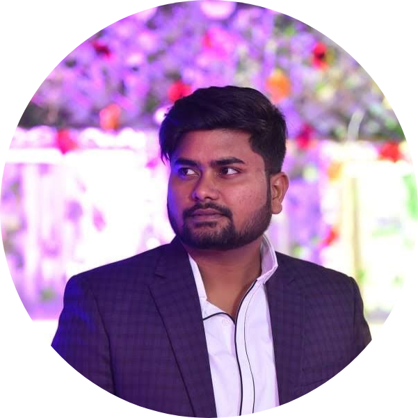

|  |
Hemant Kumar Senior Software Engineer at To The New Pvt. Ltd. |
Result-driven and diligent IT professional seeking a Senior Software Engineer or Leadership position in an organization to utilize logical thinking skills and programming expertise to provide the organization with excellent software solutions.
| Java 8 | ⭐⭐⭐⭐ |
| Spring Boot | ⭐⭐⭐⭐ |
| Spring Security | ⭐⭐⭐⭐ |
| Python | ⭐⭐⭐ |
| MongoDB | ⭐⭐⭐ | MySQL | ⭐⭐⭐ |
| Angular8 | ⭐⭐⭐⭐ |
| Apache Kafka | ⭐⭐⭐ |
| AWS-EC2,S3,IAM | ⭐⭐⭐ |
| HTML5,CSS,Bootstrap | ⭐⭐⭐⭐ |
| JavaScript | ⭐⭐⭐⭐⭐ |
July 2016 - September 2019 |
SopraSteria India Pvt Ltd |
Noida,India |
Worked in the Axway ‘Track n Trace ‘product development as software engineer. Objective of the product is to track all the details of the package shipment of the medicine in the pharmaceuticals business in European market. It is a Healthcare supply chain product made in core java consisting of different modules; all of them are maven projects. This product uses soap and rest web services and its UI is created in flex and React with redux.
September 2019 - Present |
To The New India Pvt Ltd |
Noida,India |
Working for '' Lumi Auto Rental” the most ambitious project of Seera Group (formerly known as Al Tyaar Group). The project is an ecosystem of 5 application including applications for customer, operations, contact centre, CMS and monitoring. The purpose of the project is to automate the process of car booking with minimal human intervention utilising the capability of IOT to enhance the customer experience and supervising the workflow of employees and make data analytics based decisions.